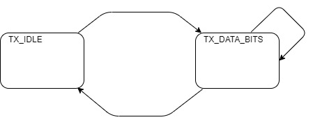
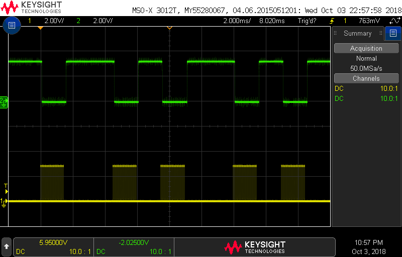
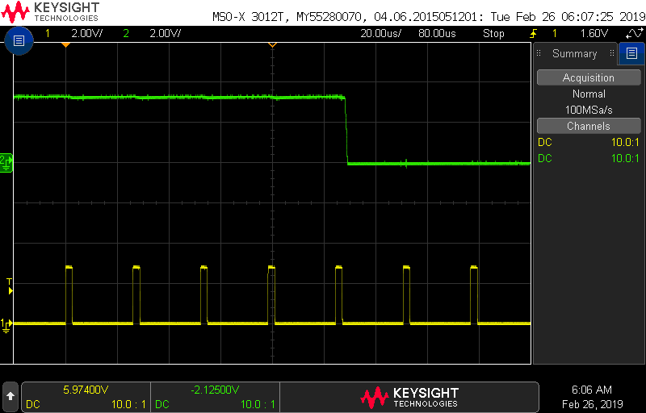

EENG 383
Lab 7 - In-lab activitiesRequirements
Working in teams of two, read through the following lab activity and perform all the actions prescribed. You do not need to document bullet items. Make a record of your response to numbered items and turn them in a single copy as your teams solution on Canvas using the instructions posted there. Include the names of both team members at the top of your solutions. Use complete English sentences when answering questions. If the answer to a question is a table or other piece of art (like an oscilloscope trace or a figure), then include a sentence explaining the piece of art. Only include your answers, do not include the question-text unless it is absolutely needed.Objective
The objective of this lab is to develop an understanding of how to transmit IR bits from our development board.Note
The gesture recognition hardware present in some cell-phones will emit bursts of IR radiation, appearing as spurious IR data packets in our environment. This can be very frustrating to achieving the objectives of your and your neighbors lab. So please take a moment to put you cell phone in an enclosed space like a backpack or pocket during the duration of the lab.External Hardware
IR LED
During last weeks lab you learned that bits sent from a handheld remote control consists of two "half" bits. The voltage level of the half bits is determined by the activity state of the transmitting IR LED. If the IR LED is emitting light at 940nm and being turned on and off at 38kHz then our IR receiver outputs a logic 0. Any other condition causes the IR receiver to output a logic 1.BJT basics
A bipolar junction transistor (BJT) is a three terminal electrical component that has the ability to amplify signals. By amplify, I mean you can input a small electrical signal and get a large electrical signal out. For example a speaker which has a headphone input and plays loud music has one or more amplifiers inside it.The image below at left shows the three terminals are named the collector, base and emitter. Each of these three terminals will have a voltage denoted VC, VB, VE respectively. The difference between two of these voltages is denoted with two subscripts. For example, VB - VE = VBE.
A BJT operates in one of four modes shown in the image below at right and is determined by the voltage difference VBE and VBC.

- Saturation
- In this mode, the connection between the collector and emitter through the BJT acts as (almost) a short circuit. If you want to drive a device with a maximum amount of current (like to illuminate an IR LED really bright), this is the mode you want to be in.
- Cut-off
- In this mode, the connection between the collector and emitter through the BJT acts as (almost) an open circuit. If you want to turn-off a device connected to the BJT (like an IR LED) then this is the mode you want to be in.
- Forward-active
- In this mode, the current between the collector and emitter is proportional to the current from the base to the emitter. If you wanted to amplify an audio signal, then this is the mode you would want to be in.
- Reverse-active
- We will take a pass on this mode and move on.
IR TX circuit
The schematic for the circuit used to illuminate the IR LED is shown in the image below at left. I designed this circuit to operate in either the saturation or cut-off modes. We will explore the theory of this circuit and then take measurements to understand where theory and reality agree and disagree. In order to take measurements, you will be probing your development board at the collector, base and emitter. The relationship between the schematic and the layout is illustrated in the image below. Take a moment to look at the layout of the IR TX circuit and your development board so that you can locate the collector, base and emitter of the BJT (in the upper corner of your development board).
The questions below will require you to look up component parameters from the component's technical datasheet. Searching Digikey for the part numbers listed in the table below will produce a page containing links to the PDF datasheets.
| Part | Digikey Part Number |
| Red LED | 160-1167-1-ND |
| IR LED | 475-3047-1-ND |
| NPN Transistor | 1727-4043-1-ND |
IR LED Operation
The IR LED operates somewhere between the saturation and Forward-active region. The following questions will guide you towards understanding the theory of how the PIC interfaces to the IR TX circuit to produce strong transmission pulses.Saturation region
To turn-on the IR LED, RC1 is set to logic 1, 3.3V. Let's analyze the IR TX circuit to understand how it operates in this mode, the saturation region. The questions in this section, concern the same scenario, a BJT in saturation. The answers to the questions in this section may depend on other values that you will derive in this section.- If pin RC1 is at logic 1 (3.3V) and the base of the BJT is 1.6V, how much current is flowing through the 300Ω resistor? Express your answer in milliamps.
- Go to the graphs on page 6 of the technical document for the RED LED. How much current flows through the red LED at 1.6V? Given this value, how much current is flowing into the base of the BJT (subtract LED current from 300Ω current)? Express your answers in milliamps.
- Assume that the voltage drop from the base to the emitter of the BJT is 0.8V. What is VE? You should assume the VB value from a the previous question.
- Use Ohm's law to determine the current through the 2.2Ω resistor connected to the emitter of the BJT. Express your answer in milliamps.
- How much current is flowing through the IR LED (this is the same as IC) when RC1 is at logic 1? Use KCL and treat the BJT as a node.
- At this IC, what is the voltage across the IR LED? You will need to consult the Forward Current graph in the IR LED technical documents. From this voltage determine the value of VC. Hint, the value you read from the graph is NOT Vc. This value is the voltage drop across the IR LED.
- What is the current gain hFEof the BJT? The current gain is the ratio of the collector current over the base current.
- Use the information gathered from the previous questions to
complete the "Theory" column in the following table. You will
complete the Actual column in a later question (you will need to
probe the amplfier circuit with the oscilloscope probe).
Value Theory Actual VB VE VC VBE VBC - If pin RC1 is at logic 0 (0.0V) and no current flows into the base from the collector, what is VB?
- Look up the technical documents for the BJT and find the maximum collector cut-off current at room temperature?
- Assuming the cut-off current flows through the 2.2Ω resistor, what is VE?
- Assuming the cut-off current flows through the IR LED, what is VC? Hint: Look back at the Forward Current graph for the IR LED. You may need to extrapolate a little based on the graph and your answer to a previous question.
- Use the information gathered from the previous questions to
complete the "Theory" column in the following table. You will
complete the Actual column in a later question.
Value Theory Actual VB VE VC VBE VBC
Cut-off region
To turn-off the IR LED, RC1 is set to logic 0, 0V. Let's analyze the IR TX circuit to understand how it operates in this mode, the cut-off region.Internal Subsystem
This week's lab will require you to use the PWM and timer subsystem to generate a 38kHz pulse train with a 10% duty cycle for specific durations. The PWM period is given by the following equation where TOSC is the period of the main oscillator and TMR2 prescaler Value is 4 because we set the prescaler to 1:4PWM Period = (PR2 + 1) * 4 * TOSC * (TMR2 Prescale Value)
- What is the value of PR2 used to generate a 38kHz waveform? Hint, you can check your answer using the register tab of the TMR2 window in the MCC after you complete the configuration below.
- To the nearest integer, how much is a 1µs change in period in terms of PR2 counts.
Firmware Organization
Build a project using the following MCC configuration:- System Clock Select: FOSC
- Internal Clock: 16MHz_HFINTOSC
- Software PLL Enabled: ✓
- In the UART(None) menu that pops up, set the following:
- UART PLIB Selector: EUSART1
- This time it will select EUSART2 for you.
- Timer Enable: ✓
- Clock Source: FOSC/4
- Prescaler: 1:1
- TMR Interrupt Enable: □
- Generate TMR ISR: □
- Timer Enable: ✓
- Prescaler: 1:4
- Postscaler: 1:1
- Requested Period: 26.3 us
- Requested Baudrate: 9600
- Data Size: 8
- Flow Control Mode: None
- Redirect Printf to UART: ✓
- Interrupt Driven: □
- Requested Baudrate: 2400
- Data Size: 8
- Flow Control Mode: None
- Redirect Printf to UART: □
- Interrupt Driven: □
- ECCP mode: Enhanced PWM
- TMR Dependency Selector: TMR2
- Select Timer: Timer 2
- PWM Duty Cycle (%): 50
- Enhanced PWM Output Mode: single
------------------------------------------------- 2400 Baud PR2: 104 ------------------------------------------------- ?: help menu o: k Z: Reset processor z: Clear the terminal b: set the Baud rate of the sent characters S: Send 0 using IR transmitter R: use EUSART2 to decode character r: reset EUSART2 p/P: decrease/increase PWM period by 1us -------------------------------------------------
- How much is the magnitude of PR2 being changed by the 'p' and 'P' commands? How much will this effect the period by?
- Look through the code for the TMR1 ISR to complete the state
diagram below. Label the arrows between states with the conditions
that cause the transition to take place. If there is no condition
(the transition is always taken) leave the arrow unlabeled. Inside
each state, list all the actions that take place when the ISR is in
that state in a C-code format. If an action is dependent on which
state the ISR goes to next (typically inside an if/then), then place
that action on an arc (on the oppsite side of the arc from the
condition which caueses that arc to be taken).

| Ch1 probe | IR_TX jumper |
| Ch1 ground clip | Ground loop |
| Horizontal (scale) | 1 ms |
| Ch1 (scale) | 2 V |
| Ch2 probe | RC0 |
| Ch2 (scale) | 2 V |
| Trigger mode | Auto |
| Trigger source | 1 |
| Trigger slope | ↑ |
| Trigger level | 1.6V |
- Align Ch 1 on the second lowest reticule on the lower half of the oscilloscope screen,
- Align the horizontal position at the second left-most reticule,
- Align Ch 2 on the second lowest reticule on the upper half of the oscilloscope screen,

Firmware Experiments
Note, that the IR radiation from your IR LED is bouncing around the room, back into the IR receiver. This happens because the IR LED is very bright and the IR receiver is very sensitive. While the IR receiver is very sensitive, it has strict bounds on what it will interpret as a valid signal. In the following experiments, you will investigate where these bounds.- Using the 'S' menu option for this question. How many PWM pulses must be sent by the IR LED before the IR receiver transitions from logic 1 to logic 0? You will need to change the horizontal scale on your oscilloscope to measure this value. Adjust your horizontal scale until you see something like the following.

This question seeks to determine what range of PWM frequencies are interpreted correctly by the IR remote control decoder chip. To do this, set up your oscilloscope according to the setup instructions above. Add a frequency and period measurement on channel 1 on the oscilloscope.
The 'P' function increases the period of the PWM waveform, decrease the PWM frequency. Increase the PWM period until the IR packet just starts being interpreted is still incorrectly. Use the oscilloscope's measurement function to determine the frequency of the PWM waveform just when this starts to happen.
Use the 'p' function to decrease the period of the PWM waveform, increasing the frequency of the PWM waveform. Decrease the PWM period until the IR packet just starts being interpreted incorrectly. Use the oscilloscope's measurement function to determine the frequency of the PWM waveform just when this starts to happen.
- What range of frequencies is interpreted correctly?
Measuring actual BJT voltages
We will now collect the missing values in the "Actual" columns for problems 8 and 13. To do this you should consult the Schematic and Layout images in the "IR TX circuit" section of this inlab. Do this using your oscilloscope and the "S" function of the inLab code to get the voltage around the BJT. Removing the tip of the oscilloscope (as shown in the image below) makes probing the BJT terminals easier. In the image below, the student is probing the collector of the BJT and the oscilloscope is showing the collector dropping from the cut-off region (IR LED off) to the saturation region (IR LED on) when the "S" key was pressed. You should use the values on the oscilloscope to fill in the "Actual" column in the tables for question 8 and question 13. Note the ground clips of both oscilloscope probes are electrically connected, so connecting one ground clip, makes both probes measure voltages relative to that ground reference.